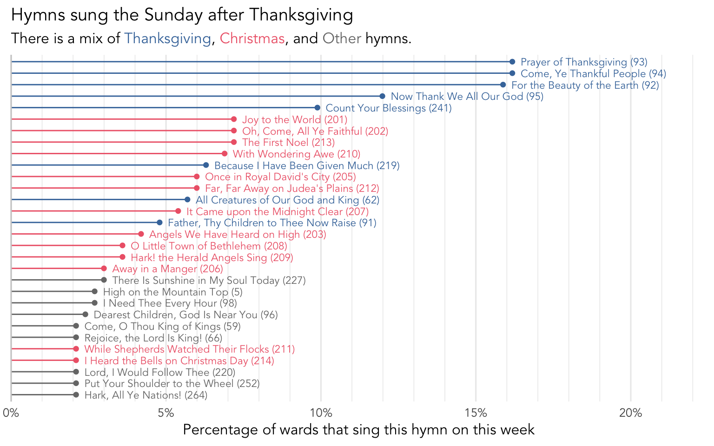
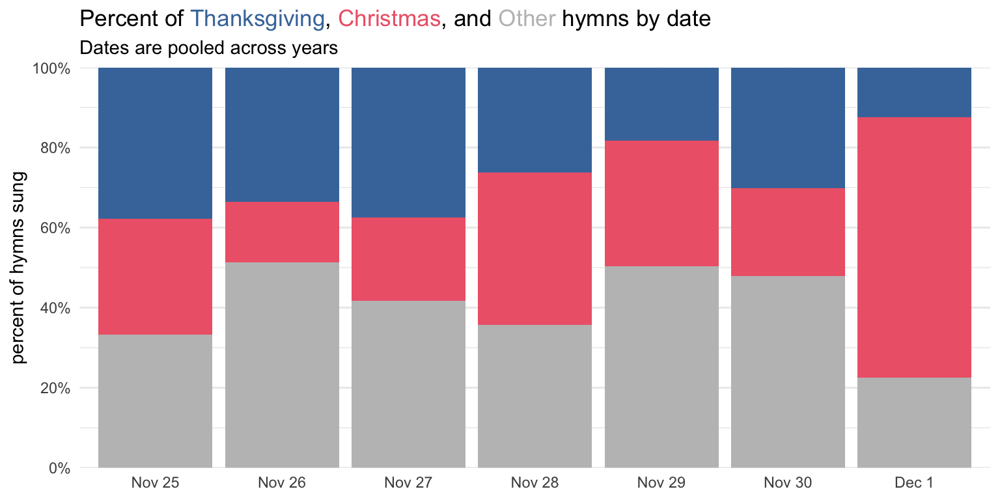
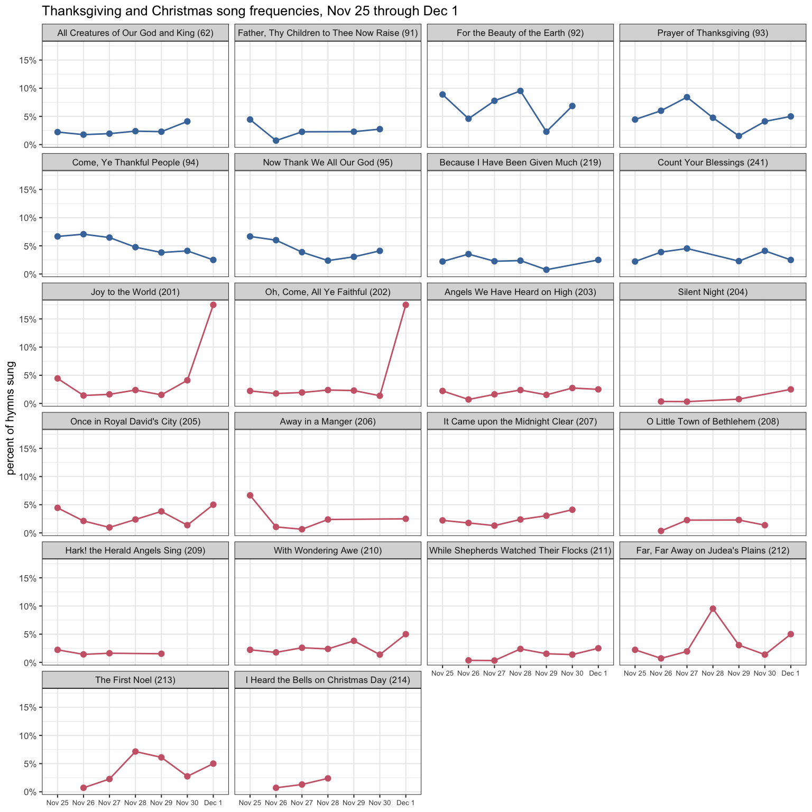

What hymns are sung the Sunday after Thanksgiving?
holidays
frequency
In the United States, the Sunday after Thanksgiving is a weird one. We’re just getting off a holiday and even though a few days have passed, a lot of people haven’t returned to work or school yet. You may still have family over on that Sunday, or you yourself may still be traveling. There is definitely a lingering Thanksgiving effect going on. But at the same time, Christmas is coming up. Many people have already decorated their houses and put up Christmas trees. Even if you refuse to listen to Christmas music before Thanksgiving, all the pent up pressure finally bursts after Thanksgiving and we enter the Christmas season with full force.
So, how does that translate into hymns in sacrament meeting? Do people continue to sing Thanksgiving hymns or do they sing Christmas hymns? Let’s dive into that Sunday after Thanksgiving and see what happens in the 361 relevant sacrament meetings I have data from.
What hymns are sung?
Figure 1 shows the most popular congregational hymns the Sunday after Thanksgiving. I’ve color-coded the hymn names to correspond to the holiday they are most closely associated with. Hymns 201–214 are Christmas hymns and are colored in red. Hymns 91–95,
It’s apparent that the Sunday after Thanksgiving is heavy on both Thanksgiving and Christmas hymns. Over 15% of wards sing either
Thanksgiving vs. Christmas
Table 1 shows the percentage of wards in my sample that sing Thanksgiving and Christmas hymns the week after Thanksgiving. The top right cell shows that 24.4% of wards sing at least one Christmas hymn and no Thanksgiving hymns. The bottom left cell shows that 41.0% of wards sing at least one Thanksgiving hymn and no Christmas hymns. So, in my opinion, combining what is seen in Figure 1 with Table 1, it’s pretty clear that the Sunday after Thanksgiving is more often thought of as a Thanksgving week, rather than a Christmas week when it comes to the hymns. Almost twice the number of wards do it that way.
| Christmas hymns | Thanksgiving hymns | |
|---|---|---|
| yes | no | |
| yes | 7.2% | 24.4% |
| no | 41.0% | 27.4% |
The surprising numbers are the other two in Table 1. 27.4% of wards don’t sing any holiday hymns the week after Thanksgiving. That’s more than the number of wards that sing Christmas hymns! My guess is that they see that the Thanksgiving “season” is over and the Christmas season hasn’t started yet, so it’s a bit of a no man’s land in the middle. There doesn’t appear to be any sort of pattern to the hymns that are sung by these wards. The ones that are slightly more common are among the more common hymns overall, so it seems like music coordinators just treat it as a neutral week and pick whatever hymns they’d pick during any other non-holiday week.
The other surprising number is that 7.2% of wards sing both a Thanksgiving and a Christmas hymn! It’s a rare case of two different holidays being celebrated through song in the same meeting. As far as what hymns are sung, we’ve seen already that the most canonical Thanksgiving hymns are most common the Sunday before Thanksgiving, which means the less popular ones are slightly more popular two weeks before or the week after. (We’ll look at Christmas hymns in a later blog post.)
There does seem to be a pattern though for when within the meeting these Thanksgiving and Christmas hymns are sung. Perhaps unsurprisingly, the most common configuration is for the opening hymn to be a Thanksgiving hymn and the closing hymn to be a Christmas hymn and, if there is an intermediate hymn, it’s neither a Thanksgiving nor Christmas hymn. This is what was found in over half the cases. However, pretty much every other configuration is attested in this small sample of 26 sacrament meetings that sing at least one Thanksgiving hymn and one Christmas hymn the week after Thanksgiving, as seen in Table 2. (Note here that “Other” means any hymn that is not a Christmas or Thanksgiving hymn.)
| Opening | Sacrament | Intermediate | Closing | number of wards | percent of wards |
|---|---|---|---|---|---|
| Thanksgiving | Other | None/Other | Christmas | 15 | 57.7% |
| Thanksgiving | Other | Thanksgiving | Christmas | 4 | 15.4% |
| Christmas | Other | Thanksgiving | Christmas | 2 | 7.7% |
| Other | Other | Thanksgiving | Christmas | 2 | 7.7% |
| Thanksgiving | Other | Christmas | Christmas | 2 | 7.7% |
| Christmas | Other | None/Other | Thanksgiving | 1 | 3.8% |
December 1st
To me, what is perhaps the most interesting thing about the Sunday after Thanksgiving is to see what kind of effect the actual date has on the hymns. Most of the time, that Sunday is still in November (it can be as early as November 25th). But, occasionally, it can be as late as December 1st. How noticeable is that boundary between the two months when it comes to hymns?
As it turns out, pretty noticeable! Figure 2 shows the breakdown of Thanksgiving, Christmas, and other hymns the Sunday after Thanksgiving by date. As you can see, there is a tendency to sing fewer Thanksgiving hymns the further into the month of November that Sunday is. It’s not super clear whether there’s the same trend for Christmas hymns within November, but there is an obvious increase in the number of Christmas hymns being sung if that Sunday after Thanksgiving is December 1st. There are 2–3 times as many Christmas hymns sung on December first than any last Sunday in November.

To dig just a little deeper, I wanted to see the trends for specific hymns across these dates. In Figure 3 (sorry for the small text), each of the eight Thanksgiving hymns and 14 Christmas hymns is in their own panel. Lines and dots are higher if that hymn is sung more often on that day. Among the Thanksgiving hymns, the most apparent trend is that

Among the Christmas hymns though, there are two hymns that clearly stand out.
I should mention that Figure 2 and Figure 3 are only possible because I have data spanning over 20 years. Since the Sunday after Thanksgiving falls on different days, I can compare those days to each other. So, for example, in 2023, the Sunday after Thanksgiving is November 26th. But the Sunday after Thanksgiving was also November 26th in 2006 and 2017, so that column represents those three years pooled together. I think this is important to mention because no matter how much data is collected from one year, you’ll still only see just one of these columns. It takes a lot of data over many years to be able to see this kind of nuance.
By the way, I wanted to see if there were more Christmas hymns sung the Sunday after Thanksgiving in more recent years compared to, say, 20 years ago. I hypothesized that as American culture (or at least businesses) are more and more accepting of the Christmas season starting sooner, that might get reflected in the hymns. Turns out, I didn’t see any obvious trend. But, it’s difficult to tease apart the date (November 25 through December 1) from the year (2002 through 2023) when the data is spread too thinly like this. I’d probably need a lot more data across the past 20 years to be able to say with more confidence whether this is true or not.
Conclusion
On the Sunday after Thanksgiving, you might sing Thanksgiving hymns, Christmas hymns, both, or neither, but the most common patten is to sing Thanksgiving hymns. If we do a breakdown by date though, we see that if the Sunday after Thanksgiving is December 1st, we see more Christmas hymns. Specifically, we see that that is driven almost entirely by